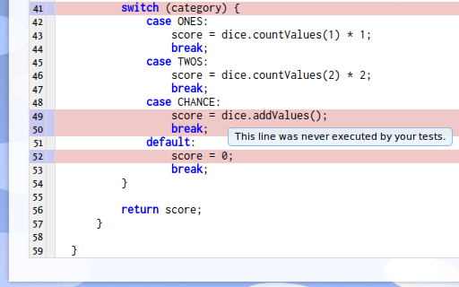

James Madison University, Spring 2014 Semester
Lab10A: Testing and code coverage

Background
For this lab, you will write test methods and submit them to Web-CAT one at a time for evaluation.
Objectives
Write tests to fully cover decisions and loops.
Practice interpreting results from Web-CAT.
Key Terms
- code coverage
- the percentage of source code that is completely exercised during testing
- white-box testing
- writing test cases to exercise specific program statements (i.e., with full access to the source code)
- black-box testing
- writing test cases to validate program specifications (i.e., testing the final output against the input)
Getting Started
As a warm-up for today's lab, complete the following problems. Remember to log into CodingBat first so you will receive credit.
Then download  Coverage.java and create a corresponding Lab10ATest.java in the same folder. Add the following test method to cover the
Coverage.java and create a corresponding Lab10ATest.java in the same folder. Add the following test method to cover the public class Coverage definition:
public static void testClass() {
new Lab10A();
}
Review the Act08A slides (Web-CAT and PA3 Hints) for more background information.
if Statements
Testing an IF statement requires that every possible outcome be exercised in the test code.
- For a simple IF or IF-ELSE statement, two tests are required: one positive (i.e., a true condition), one negative (i.e., a false condition). In the following code, the test cases might be
x = 2(negative) andx = 4(positive):if (x >= 3) { ... } else { ... } - For a nested IF statement, including those written using "IF ELSE", one test is required for each possible outcome, including the default outcome. (A default value test is required whether or not the final else is present). In the following code, the test cases might be
x = -1,x = 0,x = 10, andx = 101:if (x < 0) { ... } else if (x == 0) { ... } else if (x < 100) { ... } else { ... }
Examine the code in Lab10A.ifMethod(), then write test cases in Lab10ATest.testIfMethod() that will cover every possibility for each of the if statements.
After you've finished this step, zip Lab10A.java and Lab10ATest.java, submit the zip file to Web-CAT, and then examine the code for Lab10A.ifMethod() on Web-CAT to ensure that it was fully covered. Any red lines indicate a lack of coverage. Revise your tests and resubmit if necessary.
switch Statements
Testing a SWITCH statement requires that every case be examined, including the default case.
- The following SWITCH statement has five branches including the default. Sample test cases might include
a = 1,a = 2,a = 11,a = 12, anda = 5:switch (a) { case 1: answer = 100; break; case 2: answer = 200; break; case 11: answer = 300; break; case 12: answer = 400; break; default: answer = 500; break; }
Examine the code in Lab10A.caseMethod(), then write test cases in Lab10ATest.testCaseMethod() that will cover every possibility.
After you've finished this step, zip Lab10A.java and Lab10ATest.java, submit the zip file to Web-CAT, and then examine the code for Lab10A.caseMethod() on Web-CAT to ensure that it was fully covered. Any red lines indicate a lack of coverage. Revise your tests and resubmit if necessary.
while / for Loops
When testing a loop, provide test data that will execute a varying number of iterations, including (if possible) zero iterations, one iteration only, and multiple iterations.
- The following WHILE loop computes the greatest common divisor of a and b. Sample test cases for zero, one, and many iterations include
(a = 3, b = 3),(a = 2, b = 1), and(a = 81, b = 54).while (a != b) { if (a > b) { a = a - b; } else { b = b - a; } }
Examine the code in Lab10A.loopMethod(), then write test cases in Lab10ATest.testLoopMethod() that will execute the loop zero, one, and multiple times. Also make sure that your test cases execute each branch of the if statement included in the loop.
After you've finished this step, zip Lab10A.java and Lab10ATest.java, submit the zip file to Web-CAT, and then examine the code for Lab10A.loopMethod() on Web-CAT to ensure that it was fully covered. Any red lines indicate a lack of coverage. Revise your tests and resubmit if necessary.
Black Box Testing (Extra Credit)
It's also necessary to test code according to its specifications (i.e., what it's supposed to do) rather than how it works inside. Specification-based testing is also called black-box testing, since testing is based on documentation only and the inside of the code either can't be seen or is ignored. This type of testing requires that every possible scenario described in the documentation for the code be examined with one or more test cases. Black-box testing also entails trying to "break" the code by creating test cases that the programmers might not have foreseen.
The documentation for the method squareRoot() in Lab10A.java explains its purpose. Create a variety of test cases for this method in Lab10ATest.testSquareRoot(), ensuring that you cover every possibility. Also try to break the method with weird test cases.
Remember that this method promises only limited precision. So, for example, the square root of 4.0 won't necessarily be 2.0, but the absolute value of the difference between the two should be within the stated precision. Absolute value can be computed with the function Math.abs(). You should use the TestCase method assertTrue() rather than assertEquals() to test that the absolute value is less than or equal to the stated precision:
assertTrue("...error message...", Math.abs(expected - actual) <= PRECISION);After you've finished this step, zip Lab10A.java and Lab10ATest.java, submit the zip file to Web-CAT, and then examine the code for Lab10A.squareRoot() on Web-CAT to ensure that it was fully covered. Any red lines indicate a lack of coverage. Revise your tests and resubmit if necessary.